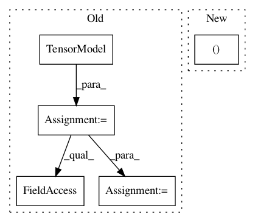

d6772f18390e5d0100ca443c91a622717e5c886c,dipy/tracking/tests/test_life.py,,test_fit_data,#,165
Before Change
gtab = grad.gradient_table(fbval, fbvec)
ni_data = nib.load(fdata)
data = ni_data.get_data()
dtmodel = dti.TensorModel(gtab)
dtfit = dtmodel.fit(data)
sphere = dpd.get_sphere()
peak_idx = dti.quantize_evecs(dtfit.evecs, sphere.vertices)
eu = edx.EuDX(dtfit.fa.astype("f8"), peak_idx,
seeds=list(nd.ndindex(data.shape[:-1])),
odf_vertices=sphere.vertices, a_low=0)
tensor_streamlines = [streamline for streamline in eu]
life_model = life.FiberModel(gtab)
life_fit = life_model.fit(data, tensor_streamlines)
model_error = life_fit.predict() - life_fit.data
model_rmse = np.sqrt(np.mean(model_error ** 2, -1))
After Change
gtab = grad.gradient_table(fbval, fbvec)
ni_data = nib.load(fdata)
data = ni_data.get_data()
tensor_streamlines, _ = load_tractogram(fstreamlines)
tensor_streamlines = move_streamlines(tensor_streamlines, np.eye(4),
ni_data.affine)
life_model = life.FiberModel(gtab)
In pattern: SUPERPATTERN
Frequency: 3
Non-data size: 5
Instances
Project Name: nipy/dipy
Commit Name: d6772f18390e5d0100ca443c91a622717e5c886c
Time: 2019-07-22
Author: girard.gabriel@gmail.com
File Name: dipy/tracking/tests/test_life.py
Class Name:
Method Name: test_fit_data
Project Name: nipy/dipy
Commit Name: aac7b54c8d6957786a9aa70e896cef10fe0ab9fe
Time: 2019-07-21
Author: girard.gabriel@gmail.com
File Name: doc/examples/tracking_deterministic.py
Class Name:
Method Name:
Project Name: nipy/dipy
Commit Name: 7885c7f254146ca7a78a6a0b50165e1f12ad529a
Time: 2016-06-24
Author: shahnawaz.ahmed95@gmail.com
File Name: dipy/reconst/ivim.py
Class Name:
Method Name: two_stage